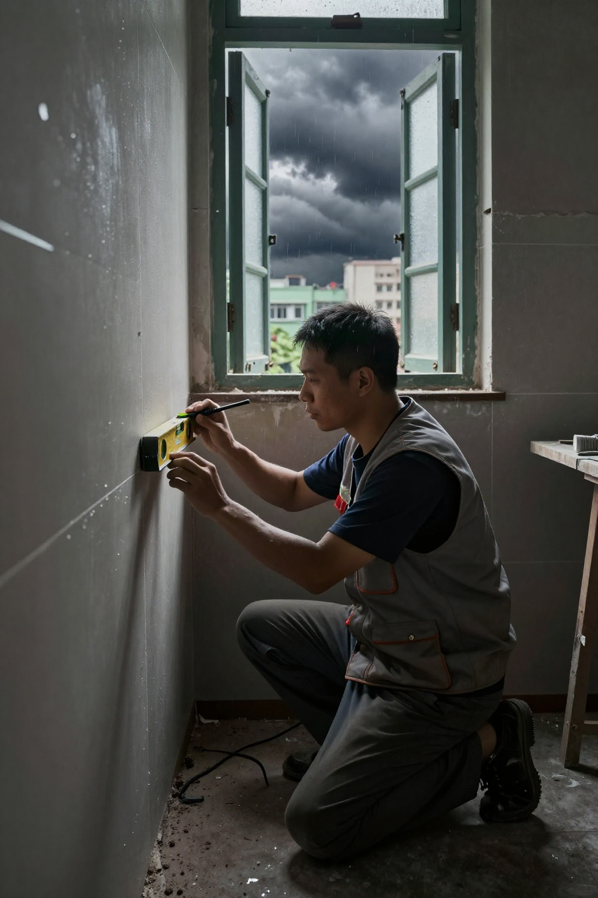
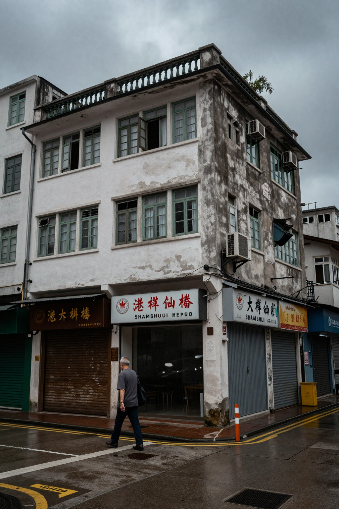
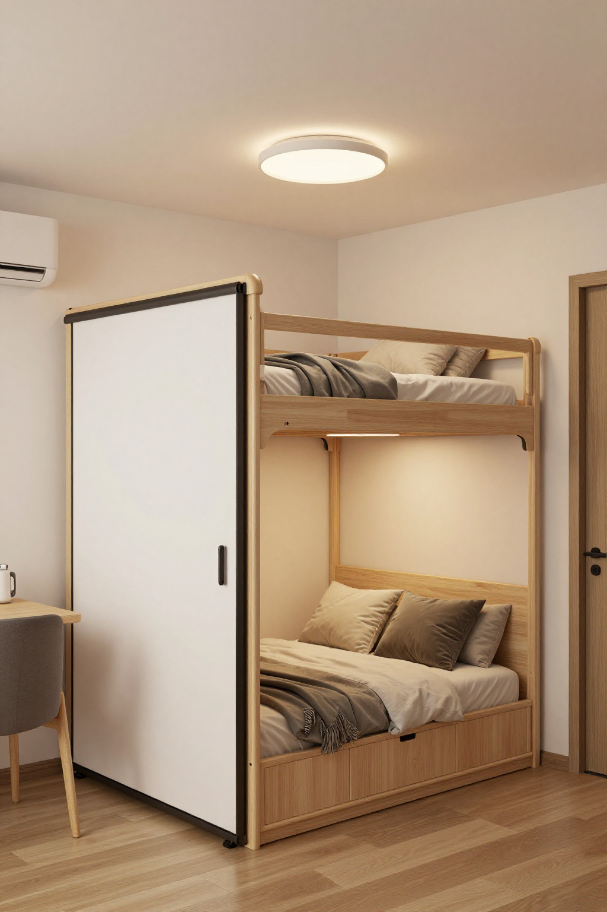
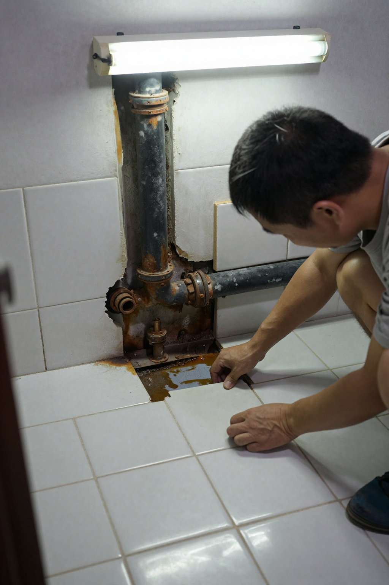
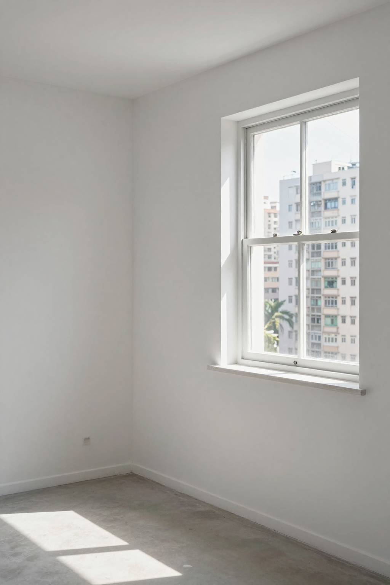

台风天里的装修哲学——深水埗陈德师傅同張丹楓讲二十六年的三句真言

📍 場景：深水埗唐樓二樓單位｜主訪：陳師傅（陳德，二十六年全屋定制）｜記錄：張丹楓｜整理：雲蕾｜日期：2026 年 9 月 26 日（颱風襲港）｜同行：徒弟阿文｜WhatsApp 報價：852 5190 2328
序幕：天文台挂风球嗰个早晨
清晨六点，天文台还没挂风球，深水埗一栋唐楼的二楼单位里，陈德已经把工具箱摆好了。窗外天色暗沉，空气里弥漫着雨前特有的闷热。他蹲在地上，拿水平尺仔细测量那面新建的假墙——误差不能超过两毫米，这是他入行二十六年给自己定下的死规矩。
我同雲蕾八点到，陈师傅已经喺度做咗两个钟头。
「陈师傅，今日真系唔挂风球啦？」
「睇住啦，不过气压咁低，你哋啲窗户我临走前再帮你睇多次。」
陈德接过我带嚟嘅奶茶，站起来活动了一下腰。五十四岁的人，腰已经开始抗议，但一蹲进工地，他又忘了年龄。
第一幕：一九九八年的东莞仔，二十年后的香港老师傅
陈德来自东莞，一九九八年经亲戚介绍来香港，先在元朗一间木行做学徒，跟着师父学全屋定制的手艺。那时候香港正经历金融风暴后的重建期，楼市低迷，但装修需求反而旺盛——业主们趁低捞底，买楼收租，顺手翻新。
「嗰阵时一个师傅带三个徒弟，做嘢做到甩轱。我师父话，香港人钟意话'实用'，但其实香港人要求嘅实用，比任何地方都要精细。」
雲蕾问：点解系「任何地方」？陈师傅笑：
「香港家居细小，每一寸空间都系钱。你喺新界起一间村屋，你可以话呢度阔落、呢度采光的。但系香港一间公屋，三百呎，间房细过唔少人嘅厕所——你要喺三百呎入面做出三个瞓房，仲要有工作空间、杂物空间、老人家探访坐低叹茶嘅地方。你话几难？」

第二幕：纳米楼嘅极限——柴湾翠湾邨两百呎三个瞓房
陈德经手过最小的单位系喺柴湾翠湾邨，一个不足两百平方呎的纳米楼。整个单位除开厕所，只剩一条走廊加一个开放式厨房。但业主提出，想要有三个瞓房。
「唔系好得闲？」
「香港人就系咁，唔到你嫌佢嘥心机。走廊位够阔，我哋做趟门，客厅上方做阁楼，厨房缩进去做L形——唔系死路嚟，换下谂法就得。」
呢个项目做完，业主请佢食饭，话系全屋最实用的纳米楼，陈德只系笑笑。
「做呢行，唔系做嘢，系做香港人嘅生活方式。」

第三幕：旧楼翻新三宝——两毫米、暗喉、盐袋
今早呢个项目系陈太一家嘅旧楼翻新，三房单位改两房，拆晒啲假间隔，重新规划客厅同主人房。陈太话想学最近嘅潮流，「去韩国综艺节目睇到嘅韩式极简风」。陈德听完整句，沉默一阵，然后讲：
「香港人住嘢，同韩国唔同。我哋嘢多、杂物多、老人家多，唔系话极简就极简。你话想要简洁，我帮你设计收纳系统，但唔好拆晒啲柜——到时你就知后悔。」
陈太好诧异，话陈师傅你好保守。陈德冇反驳，只系叫阿文去揿开块地砖，睇下下面有无漏水。
结果一揿开，果然发现两条暗喉已经生锈，其中一条仲有轻微渗漏。
「还好陈师傅醒神，唔系整完再发现就大锅了。」
「呢啲系经验，唔系醒神。你做耐咗，就知香港啲旧楼边度最容易出事。天台外墙、厨房去水位、厕所暗喉——呢三样嘢处理唔好，你整得几靓都系假。」
下午三点，天文台正式挂出一号风球。陈德收拾工具，叮嘱阿文第二日早点来，自己踩单车返铺头。

尾声：每一块板、每一粒螺丝，我都当系起紧自己嘅屋企
台风夜，陈太搵陈德，问佢可唔可以第二日去睇下窗户。陈德应承。第二日早上八点，一号风球取消，陈德已经踩嗱嗱声到咗深水埗。
「你真系早过我去返工。」
「做呢行就系咁，天唔收你就要做。」
陈德行入屋，检测完所有窗户，再检查一次假墙水平，然后讲：「得啦，可以继续做。」
临走前，陈太问佢，你做呢行咁多年，最大感受系咩？
陈德低头执工具，谂咗一阵，先开口：
「香港间屋细，但喺里面嘅生活唔可以细。每一块板、每一粒螺丝，我都当系起紧自己嘅屋企。」
风球解除，阳光从云缝透下来，照喺嗰面平整嘅假墙上，反射出嚟嘅系一个老师傅几十年嘅执着。

❓ 旧楼翻新三问
Q1：旧楼翻新点解要先揿地砖睇暗喉？
陈德师傅讲：香港旧楼最常见的问题就系暗喉生锈。因为以前用铁喉，年数耐咗就会生锈，轻则渗漏，重则爆裂。如果唔先检查就铺新地砖，新砖下面漏水，地板全毁，楼上楼下同时遭殃。旧楼翻新第一步就系检查天台外墙、厨房去水位、厕所暗喉——呢三样搞掂先再郁手。
Q2：纳米楼细单位点样增加收纳空间？
陈德师傅嘅做法系「三维思考」：唔净只睇地面，仲要睇墙身同天花板。走廊做趟门、客厅上方做阁楼床、厨房做L形转角柜、墙身装吊柜加挂钩。香港人嘢多，唔系叫你掉嘢，而系帮你谂多啲位去收纳。做纳米楼唔系将嘢塞埋一齐，而系将每一寸空间用到尽。
Q3：台风季节做装修要注意乜？
陈德师傅提醒：台风季节做旧楼翻新，第一，露台同窗边嘅夹板全部执返入屋；第二，已装好嘅柜用尼龙布冚实，底部塞厚纸皮顶住——唔好直接用胶纸，胶纸会黐甩焗漆面；第三，所有窗户关实，门口贴联络纸仔告知业主。台风期间唔好进行油漆同需要通风嘅工序，等风球过了再做。赶工就梗，但唔好留手尾畀业主。
本文配圖均為 AI 場景示意圖，僅供場景參考，並非真實工地照片或業主影像。
想知你個單位裝修要幾錢？
📱 一鍵 WhatsApp 張丹楓